하나님을 인격적으로 만났던 특별한 순간이 있나요?
작은 기도에도 귀 기울이시는 분
중학생 때 춘천의 한 섬으로 수련회를 갔습니다. 들어가는 길에 모기에 물렸는데, 별생각 없이 이렇게 기도했습니다. "하나님, 정말 살아 계시다면 수련회 동안 벌레에 물리지 않게 해주세요."
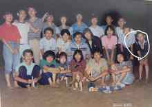
수련회 내내 친구들은 벌에 쏘이고 모기에 물려 고생했지만 저는 아무 일이 없었습니다. 그런데 마지막 날 폐회 예배 시간, 꾸벅꾸벅 졸고 있는데 따끔했습니다. 그제야 처음에 했던 기도가 떠올랐습니다.
돌아보면 대단한 사건도, 극적인 응답도 아니었습니다. 그러나 그 사소한 순간에 저는 하나님이 살아 계시다는 것, 그리고 아이의 무심한 한마디도 흘려듣지 않으신다는 것을 알았습니다. 그 앎이 30년 가까운 선교 여정의 가장 단단한 바닥이 되어주었습니다.
내 인생에서 가장 큰 방향 전환이 되었던 사건은 무엇이었나요?
군대 차례 앞에서 드러난 믿음의 민낯
고등학교 때 하나님께 헌신하고 신학교에 갔습니다. 스스로 믿음이 괜찮은 사람이라 여겼습니다. 그 생각이 무너진 건 자대 배치를 받고 맞은 첫 명절이었습니다.
부대원 전체가 모여 차례를 지내는 자리였습니다. 저는 속으로 단단히 결심했습니다. '나는 신학생이고 인생을 하나님께 드린 사람이다. 앞으로 군 생활이 아무리 꼬여도 절하지 않겠다.'
그런데 중대장님의 구령이 떨어지는 순간, 저는 이미 고개를 숙이고 있었습니다. 결심도 의지도 아무 소용이 없었고 남은 것은 두려움뿐이었습니다. 고개를 든 순간 꼿꼿이 서 있는 선임들이 보였고 그제야 놀라 멈췄지만, 이미 제 믿음의 민낯을 본 뒤였습니다.
이 질문에 짓눌린 채 남은 군 생활을 보냈습니다. 제대하고도 신학교로 돌아갈 자신이 없어 한참을 방황하다 기도원으로 들어갔습니다.
그곳에서 『벼랑 끝에 서는 용기』를 읽었습니다. 하나님은 종교적인 결단이나 내 의지의 힘으로 버티는 삶이 아니라, 그분과 친밀하게 동행하며 음성을 듣는 삶으로 부르신다는 것을 그때 처음 알았습니다. 무너진 자리에서 오히려 길이 열린 셈입니다.
1996년 9월, 예수전도단 DTS를 받으며 "하나님을 알고, 하나님을 알리자"는 부르심 앞에 섰습니다. 그날 이후 제 인생의 방향은 온전히 그분과의 동행으로 바뀌었습니다.
하나님께서 내가 예상하지 못했던 방향으로 인도하셨던 경험이 있나요?
후원받는 선교사에서, 함께 땀 흘리는 동역자로
요르단에서 사역할 때였습니다. 교회에서 신학 훈련을 받던, 형편이 어려운 현지 형제와 이야기를 나누다가 물었습니다. "너는 왜 일을 하지 않니?"
그 형제의 대답이 저를 세게 내리쳤습니다. "너도 후원받아 살잖아. 그러니 나도 후원받을 수 있게 도와줘."
한국에서 수많은 사람을 제자훈련하며 말씀에 순종하는 삶을 가르쳤다고 자부했습니다. 그런데 정작 눈앞의 형제는 저를 보며 '일하지 않고 후원받아 사는 삶'을 신앙의 모범으로 배우고 있었습니다. 현지인들이 나를 통해 무엇을 배우고 있는가. 그 질문을 오래 붙들고 씨름한 끝에, 함께 일하며 믿음으로 사는 본을 보이기로 마음을 정했습니다. 비즈니스 선교(BAM)의 시작이었습니다.
준비를 위해 한국에서 커피를 배우려고 한 사장님을 찾아갔습니다. 선교사라고 하면 편의를 봐주시겠거니 했는데, 돌아온 말은 단호했습니다.
늘 교회와 성도들의 헌금과 섬김을 받는 데 익숙했던 저에게는 낯설고 당황스러운 말이었습니다. 그러나 그 한마디로 배웠습니다. 사람들이 세상에서 살아남기 위해 얼마나 치열하게 땀 흘리는지, 그리고 대가를 지불하지 않은 자리에서는 영적으로도 실제적으로도 자라는 것이 없다는 사실을요.
이후 시리아 난민을 섬기려 튀르키예로 건너갔습니다. 이슬람 문화권 안에서 살아보니 확신이 생겼습니다. 그 견고한 사회와 마음속으로 들어가는 길은 특별한 선교사로 대접받는 데 있지 않고, 그들과 나란히 서서 함께 일하고 땀 흘리며 진짜 친구가 되는 데 있었습니다.

특히 음식이 그랬습니다. 정성껏 만든 한 접시가 누군가에게는 하루의 행복이 되고, 상처 입은 사람에게는 말보다 깊은 위로가 되었습니다. 굳게 닫혀 있던 마음이 밥상 앞에서 열리는 것을 여러 번 보았습니다.
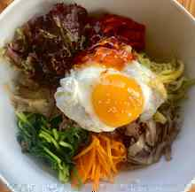
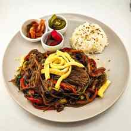
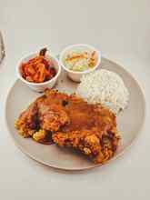
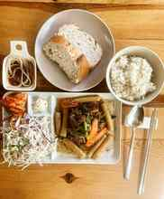
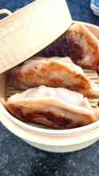
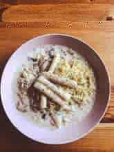
저는 대단한 요리사가 아닙니다. 다만 정직한 노동과 따뜻한 음식으로 사람의 마음이 열리고 복음의 길이 나는 것을 보았기에, 오늘도 고민하고 연습하며 하나님이 이끄신 이 길을 기쁘게 걷고 있습니다.
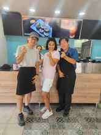
지금까지의 여정 가운데 가장 감사한 순간은 언제였나요?
정죄하지 않고 다시 믿어준 사람
여정을 돌아보면 감사한 것이 많습니다. 부족한 아들을 한결같이 품어주신 부모님, 막막할 때마다 우리 가정의 필요를 신실하게 채워주신 하나님의 공급하심은 말로 다 할 수 없는 바탕입니다.
그중에서도 제 내면을 근본적으로 바꿔놓은 한 순간이 있습니다. 제주에서 처음 간사로 사역을 시작했을 때입니다. 컴퓨터를 좀 다룬다는 이유로 행정 업무를 맡았는데, 큰 실수로 시스템 전체를 망가뜨려 업무가 엉망이 되었습니다.
두려운 마음으로 리더를 찾아가 잘못을 정직하게 인정하고 용서를 구했습니다. 리더는 저를 책망하지도, 정죄하지도 않았습니다. 용서했을 뿐 아니라 그 일을 제가 다시 맡아 수습하도록 변함없이 신뢰해 주었습니다.
밤을 새워 실수를 모두 바로잡았지만, 그날 정말로 남은 것은 따로 있었습니다. 사람은 누구나 넘어질 수 있다는 것, 그리고 넘어진 사람을 일으키는 것은 정죄가 아니라 다시 갈 수 있도록 믿어주는 품이라는 것이었습니다.
끝까지 저를 믿어준 그 리더에게 깊이 감사합니다. 그리고 그 경험은 이후 제가 동역자와 이웃을 대하는 태도, 나아가 제 선교의 중심을 통째로 바꿔놓았습니다. 넘어진 이에게 다시 일어설 힘을 건네는 사람이 되고 싶다는 마음은 그날 생겼습니다.
가장 힘들었던 계절은 언제였고, 그 시간을 통해 무엇을 배웠나요?
지진의 새벽, 비천함 속에서 배운 공감
새벽에 잠들어 있는데 엄청난 진동으로 집이 흔들렸습니다. 놀라 아이들을 깨우고 가족을 챙겨 정신없이 밖으로 피했습니다.
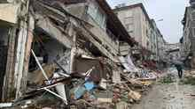
한겨울 새벽의 뼛속까지 시린 추위에 비까지 내렸지만, 우리 가족이 몸을 피할 곳은 어디에도 없었습니다. 다른 사람들은 차 안으로 들어가 비와 추위를 피하는데, 우리는 갈 곳이 없어 공원 맨땅에서 떨었습니다. 벌벌 떠는 어린 자녀들을 보고 있자니 하나님을 향해 걷잡을 수 없는 분노가 치밀었습니다. 비바람 속에서 가족 하나 지켜주지 못하는 아버지, 한 사람의 남편으로서 제 자신이 너무 초라했습니다. 그렇게 울었던 그때가 제 인생에서 가장 춥고 참담한 계절이었습니다.
지진이 잦아들고 뉴스를 확인하고 나서야 알았습니다. 제가 겪은 고통은 수많은 사람의 참극 앞에서는 그저 작은 불편이었다는 것을요. 수많은 이들이 목숨을 잃었고, 사랑하는 가족과 평생 일군 삶의 터전을 한순간에 잃었습니다.
동료 선교사들과 피해 지역으로 들어갔을 때 마주한 광경은 말로 옮기기 어려울 만큼 참혹했습니다. 우리 가족을 지켜주신 은혜에도 감사했지만, 그 참상 앞에서 가장 크게 쓰인 것은 공원에서 떨며 느꼈던 제 안의 비천한 감정이었습니다. 그 감정 덕분에 이웃의 아픔이 머리가 아니라 가슴으로 들어왔습니다. 하루 열두 시간씩 운전하며 쉼 없이 그들의 곁으로 달려갔습니다.
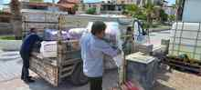
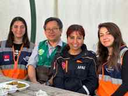
그 계절을 지나며 선교의 본질이 공감에 있다는 것을 배웠습니다. 만왕의 왕이신 예수님이 낮고 천한 몸을 입고 오셔서 배신과 고통, 가난과 슬픔을 친히 겪으셨기에 우리가 그분을 믿고 기댈 수 있는 것처럼 말입니다.
제 선교는 부유하거나 대단한 능력을 베푸는 일이 아닙니다. 연약하고 부족한 한 사람으로서 하나님을 의지하며, 이 땅의 사람들과 함께 울고 웃으며, 그들의 아픔을 온 마음으로 이해하고 사랑하는 법을 배우는 것. 혹독했던 지진의 계절이 제게 새겨준 평생의 배움입니다.
지금의 나를 만든 가장 큰 경험은 무엇이라고 생각하나요?
신용카드를 자르고 만난 신실한 공급
미국에 머물던 시절, 큰딸과 코스트코에 갔습니다. 아이가 너무 갖고 싶어 하는 물건이 있었는데 수중에 돈이 한 푼도 없었습니다. 사줄 수 없는 그럴듯한 이유를 여러 개 대며 달래보았지만 아이는 고집을 꺾지 않았습니다. 결국 말했습니다. "네가 정말 원한다면 같이 하나님께 기도해보자."
그런데 잠시 후, 전혀 모르는 미국인 한 분이 다가와 우리에게 돈을 건넸습니다. 큰 액수는 아니었습니다. 그러나 하나님이 어린아이의 작은 신음과 우리의 기도를 놓치지 않고 듣고 계신다는 사실에 전율이 일었습니다.
현실의 미국 생활은 혹독했습니다. 도착하자마자 후원금이 끊기기 시작했고, DTS 사역과 함께 비즈니스 선교를 준비하려 커피를 배우고 싶었지만 재정이 없어 아무것도 할 수 없었습니다. 그곳에서 감사하게도 쌍둥이 딸을 얻었지만, 생활을 버티느라 신용카드 빚이 눈덩이처럼 불어났습니다. 인적 드문 시골 YWAM 베이스에서 사람의 힘으로 할 수 있는 일은 없었습니다.
벼랑 끝에서 아내와 저는 무릎을 꿇고 이야기했습니다. 손에 쥐고 있던 카드를 모두 자르고 하나님 앞에 엎드렸습니다.
세상의 계산법을 내려놓고 다시 선교지로 나가 믿음으로 살겠다고 결단한 그 순간부터 하나님이 일하기 시작하셨습니다. 눈덩이 같던 빚이 모두 청산되었고, 오히려 재정이 남아 어려운 이들을 도울 여유까지 생겼습니다. 타던 차는 팔아 돈을 마련하는 대신 필요한 사람에게 그냥 선물로 내어주었습니다. 한국을 거쳐 풍성하게 채우시는 손길을 온몸으로 경험하며 튀르키예 선교지로 담대히 들어갔습니다.
내 손의 카드나 인간적인 안전장치가 나를 살리는 것이 아니라는 것, 모든 것을 내려놓고 하나님만 의지할 때 그분이 친히 일하신다는 것. 이 경험은 지금도 제 삶과 사역을 지탱하는 가장 굵은 기둥입니다.
지금 하나님께서 내 안에서 다루고 계신 부분은 무엇이라고 생각하나요?
닫아버린 마음을 열고, 다시 공동체를 배우는 중
예수전도단(YWAM) 사역의 가장 핵심적인 가치는 팀으로 일하는 것입니다. 그런데 척박한 중동 선교 현장에서 제가 겪은 고립감과 외로움은 낯설고 아팠습니다.
분명 팀이 있었고 동역자들과 함께 있었지만, 한국이나 미국에서 경험했던 살아 있는 하나 됨과는 달랐습니다. 어느 순간부터 함께 모여 예배하고 기도하는 자리가 형식처럼 느껴졌고, 서로 "사랑한다"고 말하는 고백이 가식처럼 들렸습니다. 그러다 보니 기대가 식었고, 저도 서서히 마음의 문을 닫았습니다.
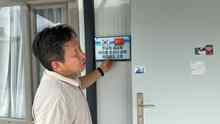
혼자 일하고 혼자 결정하는 편이 훨씬 편합니다. 부딪힐 일도 없습니다. 그래서 사역이든 비즈니스든 혼자 묵묵히 해내는 게 낫겠다는 생각도 했습니다. 솔직히 지금도 팀으로 일하고 관계를 맺어가는 일은 불편하고 많은 에너지를 요구합니다.
그런데 조지아에 머물며 하나님이 제 안에서 집중적으로 다루고 계신 영역이 바로 이것, 관계의 재정비와 회복입니다.
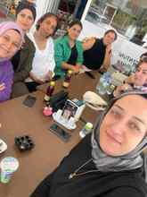
하나님이 일하시는 참된 방법은 혼자 이뤄내는 성취가 아니라, 결함 있고 불편한 사람들이 모여 함께 세워져 가는 공동체에 있다는 것을 머리로는 압니다. 상처받기 두려워 제가 둘러친 벽을 허물고, 다시 사람을 신뢰하고, 불편을 감수하며 서로를 품는 법을 지금 겸손히 다시 배우고 있습니다. 교회는 혼자 예배하는 곳이 아니니까요.
지금 내 인생과 사역의 계절에서, 내가 정말 필요로 하는 것은 무엇인가?
정직하게 땀 흘려 일할 수 있는 터전,
그리고 멈춰 선 기계가 다시 돌아가는 돌파
솔직히 고백하면 지금 저와 우리 가족에게 가장 절실한 것은 재정입니다. 더 정확히 말하면 제 손으로 땀 흘려 일할 수 있는 환경입니다.
지금 저는 시드니 호산나와 6개월 동안 서로를 알아가는 시간을 보내고 있습니다. 같은 비전을 품은 이들과 함께 일할 수 있게 하신 것은 제게 분명한 은혜이고, 이 사역이 잘 세워지기를 진심으로 바라며 맡겨진 자리에서 제 몫을 다하고 있습니다.
다만 생활과 사역을 함께 감당하기에는 재정이 여전히 부족한 것이 현실입니다. 아이들이 학교에 다니기 시작하면서 필요한 재정은 더 늘었습니다. 차가 없어 비를 맞으며 등교하는 아이들의 뒷모습을 볼 때, 조지아에 온 뒤 가족과 제대로 된 여행 한 번 가보지 못한 현실을 마주할 때, 가장으로서 마음이 시립니다.
그리고 제 마음 한편에는 늘 창고에 멈춰 서 있는 떡 기계들이 있습니다.
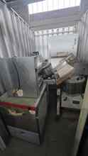
기계 자체가 아까워서가 아닙니다. 그 기계에는 한국에서 우리 가정을 위해 눈물로 무릎 꿇고 기도하며 헌물해 주신 분들의 헌신이 고스란히 담겨 있습니다. 그 귀한 마음을 아직 제대로 써보지 못한 채 세워두고 있다는 사실이 저를 무겁게 합니다.
떡 사업은 호산나의 사역 방향과는 별개의 일입니다. 호산나는 이 부분을 따로 보고 있고, 저 역시 제가 나서서 밀어붙일 일이 아니라고 생각합니다. 다만 기도로 후원해 주신 분들의 마음이 있고, 무엇보다 이곳 현지에 우리 떡을 기다리는 분들이 실제로 계시기에, 이것만큼은 제가 별도로 감당해야 할 몫이라고 여기고 있습니다.
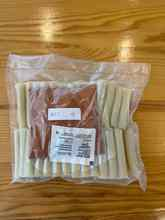
튀르키예에서의 경험에 비추어 보면, 이 기계는 우리 가정의 재정적 자립뿐 아니라 사역에도 분명한 돌파구가 될 수 있는 도구입니다. 아직 시작할 자리와 때가 열리지 않았을 뿐입니다.
그래서 지금도 온라인으로 할 수 있는 일을 찾고, 새로운 기술을 배우고, 맡겨진 F&B 사역을 위해 밤을 새워 고민하고 기도합니다. 그러면서 하나님께 재정의 문을 열어달라고 매달리고 있습니다.
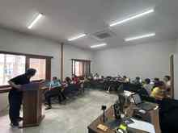
가장 간절히 바라는 것은 창고에 멈춰 있는 떡 기계가 제자리를 찾아 다시 돌아가는 것입니다. 후원자들의 눈물의 기도가 헛되지 않도록, 제 손으로 땀 흘려 가정을 책임지고 나아가 이웃을 섬기는 당당한 비즈니스 선교의 걸음을 내딛을 수 있도록, 하나님의 실질적인 개입과 길 여심이 절실히 필요합니다.